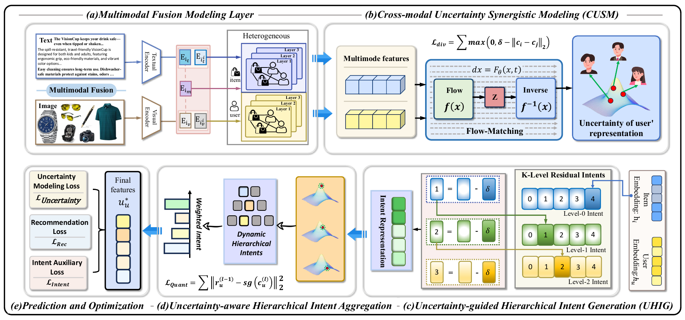
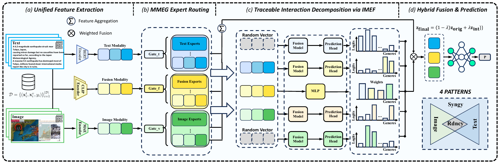
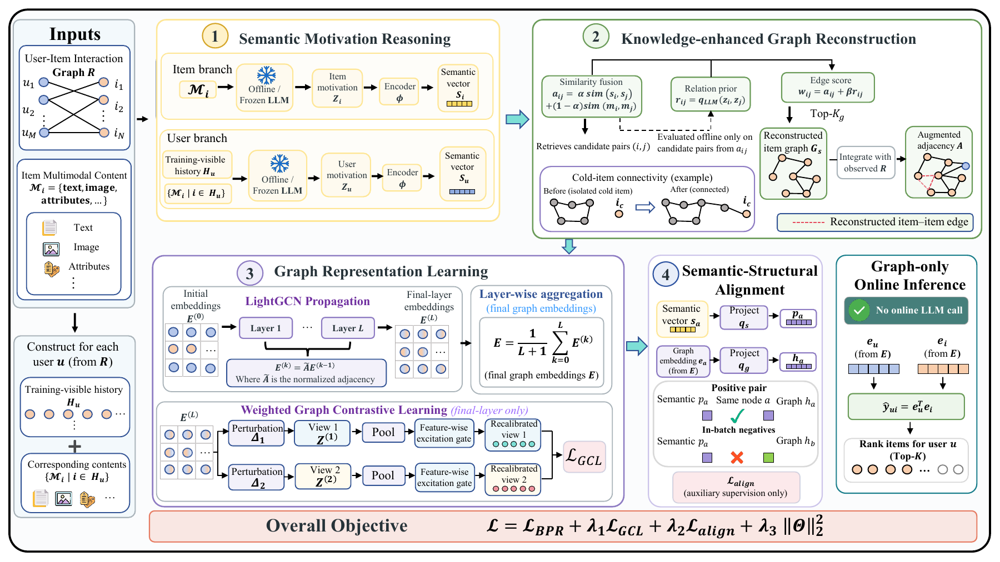

I am an undergraduate student in Communication Engineering at Northeastern University at Qinhuangdao. My research interests include large language models and multi-agent systems, multimodal learning, and recommendation systems. I also work on communication and coding theory, with a focus on reliable computing.
🔥 News
- 2026.08: 🎉 Our paper on open-set standpoint screening was accepted by the EMNLP 2026 Main Conference.
- 2026.08: 🎉 Three co-authored papers on uncertainty-aware recommendation, multimodal fake-news detection, and cold-start recommendation were accepted by WISE 2026.
- 2026.04: Completed an FPC engineering internship at Bomine Electronics.
- 2025.09: Received the Provincial Second Prize in the “Zhengda Cup” National Student Market Survey and Analysis Competition.
- 2025.06: Received the Provincial First Prize in the 12th National College Student New-Generation Information and Communication Technology Competition.
📝 Selected Publications

The “10th Juror”: Open-Set Standpoint Screening for Bureaucratic Bias Detection
Yuchen Miao, Zijun Wang, Chang Han, Yurui Shi, Mingtai Zhang, and Siyang Xu
PDF · arXiv · Poster · Video · Conference

Anatomy of a Decision: Uncertainty-aware Hierarchical Intent Learning via Flow Matching for Multimodal Recommendation
Yuchen Miao, Zijun Wang, Ke Liu, and Siyang Xu
PDF · arXiv · Video · Conference

IMEX-FND: A Traceable Interaction-Aware Mixture-of-Experts Framework for Multimodal Fake News Detection
Yuchen Miao, Zijun Wang, Ke Liu, Peixuan Wang, and Chang Han
PDF · arXiv · Video · Conference

MOTIF: Motivation-guided Topology Inference for Cold-start Multimodal Recommendation
Yurui Shi†, Yuchen Miao†, Ximing Hu, Zijun Wang, and Chang Han
(† means equal contribution)
PDF · arXiv · Conference
Preprints
- Sharp Root Anti-Concentration via Projective Incidence and Ordered Root Laws. Zijun Wang, Yuchen Miao, Yifan Hu, and Huanmin Liu. 2026. arXiv
Other Publications
- Advanced Parity Calculation Techniques in EVENODD Coding: A Comparative Analysis of Fault Tolerance and Computational Efficiency. Zijun Wang. 2025. DOI · Research note
💻 Research & Experience
- 2025–Present, Research Collaborations. Research on multi-agent governance, bureaucratic-bias detection, explainable multimodal recommendation, and fake-news detection.
- IHUB Research Program. Research with Prof. Lara Dolecek on parity computation, fault tolerance, and computational efficiency in EVENODD coding using MATLAB simulations.
- 2026.01–2026.04, FPC Engineering Intern, Bomine Electronics. Worked on design standards, process constraints, quality control, and R&D sample tracking for flexible printed circuits.
- 2024.07–2024.10, Embedded Systems & PCB Design Intern, Kedinuoyi Technology. Developed embedded modules and device drivers in C, and designed and tested PCBs using Altium Designer.
- 2024.08–2024.09, Software & Data Assistant, Shenzhen Huaxing New Energy Technology. Supported software optimisation and collected and organised test data.
📖 Education
- 2023–2027, Northeastern University at Qinhuangdao, B.Eng. in Communication Engineering.
- GPA: 3.83 / 4.0.
🎖 Honors and Awards
- 2025.06, Provincial First Prize, 12th National College Student New-Generation Information and Communication Technology Competition.
- 2025.09, Provincial Second Prize, “Zhengda Cup” National Student Market Survey and Analysis Competition.
- 2024.06, Provincial Third Prize, 17th Chinese Collegiate Computing Design Competition.
- 2023–2026, University Third-Class Scholarship, awarded five times.
Last updated: October 2026.